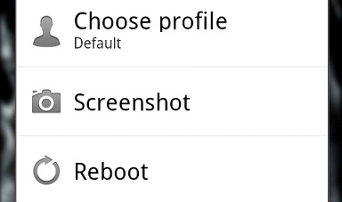

Pengenalan Android
- 1. Apa itu Andoid?
- 2. Sejarah Android
- 3. Android 4.0 (Ice Cream Sandwich)
- 4. Android 4.1 (Jelly Bean)
- 5. Android 4.4 (Kitkat)
Apa Itu Android???
- Android adalah sistem operasi berbasis Linux yang dirancang untuk perangkat seluler layar sentuh seperti smartphone dan tablet. Android didasarkan pada manipulasi langsung, menggunakan metode masukan sentuhan yang serupa dengan tindakan di dunia nyata, seperti menggesek, mengetuk, dan mencubit untuk memanipulasi obyek di layar.
Sejarah Android

- Andy Rubin
- Android, Inc. didirikan di Palo Alto, California, pada bulan Oktober 2003 oleh Andy Rubin, Rich Miner, Nick Sears, dan Chris White untuk mengembangkan "perangkat seluler pintar yang lebih sadar akan lokasi dan preferensi penggunanya"
Android 4.0 (Ice Cream Sandwich)

- Android versi ini (atau bisa disingkat ICS) memiliki beberapa kelebihan dibandingkan dengan android versi sebelumnya. Berikut beberapa kelebihan dari ICS :
1. Home Screen

- Kita dapat merubah ukuran widget sesuka kita, sehingga tampilannya akan terlihat lebih nyaman. Ikon aplikasi dapat diseret ke dalam folder. Tapi pada Ice Cream Sandwich lebih unggul dari iPhone karena kita bisa menempatkan kontak seseorang atau semacam jalan pintas panggilan cepat ke dalam folder juga, dan bahkan menempatkan orang dalam favorit.
2. Keyboard

- Sedikit update pada bagian keyboard yaitu kemampuan inline pemeriksaan ejaan. Sayangnya masih belum support bahasa Indonesia.
3. Roboto

- Droid Sans yang telah menjadi font di Android telah diganti dengan typeface baru bernama Roboto.
4. Face Unlock

- Untuk membuka layar (lockscreen) tersedia opsi selain menggeser (slide), PIN & Password. Sekarang tersedia pendeteksi wajah yang cukup keren dan canggih. Hanya dengan mendekatkan wajah ke gadget, maka Android akan mengenalinya lalu membuka layar buat pengguna.
5. Taking Screenshots
- 
- Kita bisa dengan mudah mengambil screenshot (tampilan layar yg sedang aktif) tanpa harus menginstal aplikasi tambahan. Caranya mudah, hanya dengan menekan tombol power + volume down secara bersamaan, atau tombol power + home sekaligus. Tidak lebih dari satu detik, secara otomatis akan keluar bingkai (frame) warna putih, yang menandakan proses screenshoot berhasil. Gambarnya bisa dilihat pada gallery.
6. Flexible Widgets
- Widget merupakan icon aktif yang mirip fungsi shortcut pada Windows. Widget akan mempersingkat waktu untuk membuka aplikasi yang sering digunakan atau dilihat, misalnya news, cuaca atau musik. Kita bisa menemukan dan mengatur widget dalam menu aplikasi melalui tab "widget". Atau dengan menekan icon aplikasi beberapa detik untuk menampilkan widget tsb di homescreen (layar depan).
7. Notifications
-
- Google melakukan perombakan besar di area ini. Kini music control telah terintegrasi dan notifikasi juga mudah dihilangkan dengan cara swipe ke kiri atau kanan. Pengguna juga bisa mengintip notifikasi kendati layar ponsel dalam keadaan terkunci.
8. Advanced Call Options

- Kita bisa menolak atau mengakhiri panggilan hanya dengan menggunakan tombol power saja, jadi tidak perlu lagi mencari tombol merah "End Call". Kita juga bisa menolak panggilan atau menolak dengan SMS. Untuk melakukan hal ini cukup pilih pengaturan pada "Call".
9. Transfer Data Dengan Android Beam

- Melalui Android Beam ini kita bisa mentransfer data antara dua perangkat dengan cara yang mudah. Teknologi ini menggunakan fitur NFC (Near Field Communication), tetapi kedua ponsel harus menjalankan Android Beam terlebih dahulu. Dengan begitu kita bisa dengan mudah mentransfer foto, contact atau file multimedia hanya dengan mendekatkan dua gadget (tanpa perlu menyentuhnya). (Android Beam tidak tersedia pada semua gadget, hanya perangkat tertentu saja.)
Android Jelly Bean

Google mengumumkan Android 4.1 (Jelly Bean) dalam konferensi Google I/O pada tanggal 27 Juni 2012. Berdasarkan kernel Linux 3.0.31, Jelly Bean adalah pembaruan penting yang bertujuan untuk meningkatkan fungsi dan kinerja antarmuka pengguna (UI). Pembaruan ini diwujudkan dalam "Proyek Butter", perbaikan ini termasuk antisipasi sentuh, triple buffering, perpanjangan waktu vsync, dan peningkatan frame rate hingga 60 fps untuk menciptakan UI yang lebih halus.
10 Fitur Unik di Android Jelly Bean
1. Google Now
- Google Now dikatakan akan memberikan kepada pengguna informasi yang tepat pada saat yang tepat pula. Informasi dalam Google Now disajikan dalam bentuk kartu-kartu informasi yang merepresentasikan beberapa jenis informasi yang berbeda-beda seperti cuaca, lokasi, skor olahraga dan sebagainya.
2. Notifications

- Meski bar notifikasi yang diusung oleh Jelly Bean tidak mengalami banyak perubahan, namun begitu Anda dapat dengan mudah melihat beberapa peningkatan. Salah satunya ketika Anda menerima pesan sms, maka bar notifikasi akan menampilkan pilihan quick reply yang memungkinkan Anda untuk menjawab langsung pesan tanpa harus masuk ke menu pesan. Anda juga dapat menelepon langsung dengan memilih telepon. Sementara itu ketika Anda menerima email masuk, maka Anda dapat melihat preview dari email tersebut.
3. Google Assistant
- Popularitas SIRI besutan Apple, tentu telah membuat kompetitor untuk mau tidak mau mengejar dengan menawarkan produk serupa dengan kualitas yang lebih baik. Untuk itulah Google meluncurkan Google Assistant, yang menggunakan basis fitur perintah suara. Anda dapat mengirim sms, email, menelepon teman dan sebagainya. Untuk mengaktifkan Google Assistant, silakan tekan ikon mikrofon yang terdapat pada kotak pencarian Google.
4. Face Unlock dengan Liveness Check

- Face Unlock pada Jelly Bean memang bukanlah hal yang baru, karena fitur ini telah diperkenalkan sebelumnya pada versi Ice Cream Sandwich. Namun begitu, Anda semua tentu telah tahu bahwa Face Unlock dapat dengan mudah dikelabui menggunakan foto. Oleh karena itu pada update Android yang terbaru ini, Google menambahkan fitur Liveness Check yang mengharuskan pengguna mengedipkan matanya untuk membuka kunci layar. Jika pengguna tidak mengedipkan mata, Jelly Bean akan mengharuskan Anda untuk memasukkan password atau pola sesuai dengan pengaturan yang Anda lakukan saat fitur Face Unlock diaktifkan.
5. Screen Capture

- Meski juga bukan merupakan fitur baru, Google menambahkan beberapa fitur baru pada Jelly Bean. Untuk mengambil screen capture, Anda cukup menekan tombol power dan volume bagian bawah secara berbarengan. Setelah gambar berhasil diambil, pengguna dapat langsung mengeditnya. Anda dapat melakukan cropping, rotasi, dan membagikannya melalui email atau jejaring sosial.
6. Say it Offline
- Speech to text memang merupakan fitur yang telah lama ada pada Android beberapa waktu lalu. Nah pada Jelly Bean, Anda dapat mengkonversi ucapan kedalam teks tanpa harus terhubung dengan koneksi data operator atau Wi-Fi. Ya, menulis pesan dengan perintah suara kini mungkin untuk Anda lakukan meski perangkat tidak tersambung ke internet. Hal ini dimungkinkan, karena pengenalan suara kini dapat dilakukan langsung dari perangkat Jelly bean tanpa harus diupload terlebih dulu ke server.
7. Smart Widget
- Pada Jelly Bean, widget kini dapat Anda atur dengan lebih mudah berkat teknologi pintar yang disematkan kedalamnya. Ketika Anda menempatkan sebuah widget ke halaman utama, maka widget lain akan secara otomatis bergeser untuk memberikan ruang kepada widget yang baru.
8. Mematikan notifikasi untuk aplikasi tertentu tanpa menghapusnya

- Anda merasa terganggu dengan masuknya notifikasi dari sebuah aplikasi? Tenang, pada Jelly Bean Anda dapat mematikannya tanpa harus melakukan proses uninstal aplikasi tersebut. Untuk mematikan notifikasi yang berlaku pada aplikasi tertentu, silakan ikuti tips berikut:
- o Tekan menu dan masuk ke kelola apl
- o Pilih aplikasi yang ingin Anda matikan notifikasinya
- o Hilangkan tanda centang pada tampilkan pemberitahuan
9. Efek Hujan Jelly Bean
- Selain fungsi yang serius, Anda juga bisa mendapatkan efek hujan Jelly Bean yang lebih ditujukan untuk bersenang-senang. Anda dapat bermain-main dengan efek hujan ini cukup dengan masuk ke pengaturan. Selanjutnya masuk ke about phone dan lakukan tap beberapa kali pada keterangan Android Version yang terdapat disana. Setelah itu Anda akan melihat Jelly bean besar, lakukan tap beberapa kali hingga muncul Jelly Bean dalam jumlah banyak yang dapat Anda sapukan ke berbagai arah.
10. Barrel Roll

- Sebagai bagian dari fitur unik Jelly Bean, Anda dapat melakukan trik barrel roll yang merupakan upaya Google untuk memamerkan kelebihan yang dimiliki oleh browser yang dimilikinya dengan menunjukkan efek menggelindingkan halaman situs yang sedang dikunjungi layaknya sebuah roda.
Android Kitkat

merupakan versi Android terbaru 4.4, yang dapat digunakan untuk perangkat yang menggunakan RAM minimal 512 MB. Sehingga perangkat Android kelas Entry level pun akan dapat merasakan update terbaru dari OS Android terbaru dari Google ini.
10 Fitur Baru di Android Kitkat
1. Enhanced Caller ID

- Orang-orang memiliki kecenderungan untuk mengabaikan panggilan dari nomor telepon yang tidak dikenali. Nah, kalau kamu menerima panggilan yang nomornya tidak ada di dalam Kontak kamu, maka Android KitKat akan mencoba untuk mengambil informasi Caller ID dari daftar lokal dalam Google Maps. Fitur ini bisa sangat berguna bagi orang-orang yang memiliki keluarga dan teman-teman yang menelepon dari nomor tempat mereka bekerja. Misalnya gini, kamu dapat nomor dari 0274-6678xxx, nah Google bakal ngasih tau dimana lokasi dan tempat perusahaan si penelpon.
2. Ok Google

- Kamu tidak perlu lagi menyentuh layar untuk melakukan pencarian, mengirim teks, mencari arah atau memutar musik. Bila kamu berada di layar awal (home screen) atau memiliki aplikasi Google Now, kamu cukup mengatakan “Ok Google” diikuti dengan perintah untuk melakukan salah satu dari tugas-tugas yang kamu inginkan. Misal nih, kamu dapat mengatakan perintah seperti “Ok Google, where is the closest McDonalds.” atau “Ok Google, play Rihanna.” Sungguh asyik bukan?
3. Immersive Display

- Dalam versi Android sebelumnya, status bar dan tombol navigasi tetap muncul di layar saat kamu sedang bermain game atau menonton film. Saya kira hal itu sangat mengganggu, nah di Android KitKat ini telah ditambahkan sebuah fitur untuk menyembunyikan status bar dan tombol navigasi agar tampilan Android kamu bisa benar-benar full screen.
4. Contact Prioritization

- Android KitKat mem-prioritaskan kontak berdasar pada orang-orang yang lebih sering kamu ajak SMS-an atau lebih sering kamu telepon. Dari aplikasi Contacts, kamu juga dapat mencari tempat nongkrong atau restaurant yang paling dekat di daerah kamu melalui search box yang berada pada bagian atas. Aplikasi Kontak Android KitKat ini juga ter-integrsi dengan aplikasi kontak Google kamu.
5. Message Consolidation
- Android KitKat telah menggabungkan SMS, MMS, Panggilan video dan Google Hangouts chat dalam satu aplikasi. Aplikasi Android KitKat Messagess juga mendukung share-location dan mengirimkan animasi GIF ke teman kamu. Hampir mirip pada aplikasi iMessage pada iOS, bedanya pada iMessage kita tidak bisa mengirim gambar gambar format GIF.
6. Emojis
- Google telah menambahkan Emojis ke Keyboard Android KitKat. Emoji adalah istilah Jepang untuk ideogram dan smiley yang digunakan dalam pesan teks dan website. Kamu dapat menambah isi pesan kamu dengan menempatkan smiley, mobil, hewan, dan ikon menarik lainnya dengan fitur ini. Fitur ini meniru pada iOS keyboard, tapi ndak apa-apa, yang bagus-bagus memang harus ditiru, selama itu tidak melanggar hak cipta.
7. Cloud Printing Support
- Android KitKat memiliki dukungan untuk Cloud Printing (pencetakan di awan). Jadi, kamu bisa mencetak dokumen, presentasi, website dan foto dari ponsel KitKat atau tablet. Agar fitur ini bisa bekerja, printer kamu harus terhubung ke Google Cloud Print atau HP ePrint.
8. Quickoffice

- Google Quickoffice akan terinstal dengan Android KitKat. Quickoffice mendukung pengeditan dokumen, spreadsheet, dan presentasi yang dibuat dengan Microsoft Office atau Google Docs. Ketika Anda login ke Quickoffice menggunakan akun Google kamu, aplikasi akan menampilkan dokumen yang telah tersimpan dalam Google Docs dan akun Google Drive. Juara. Tidak rugi Google mengakuisisi QuickOffice tahun lalu.
9. Step Detector And Step Counter
- Android KitKat memiliki detektor langkah dan penghitung langkah, sehingga aplikasi yang berhubungan dengan kebugaran/fitness dapat melacak ketika pengguna sedang berjalan, berlari, dan memanjat tangga. Langkah detektor ini menggunakan input accelerometer untuk mengenali ketika pengguna telah mengambil langkah. Penghitung Langkah ini akan melacak jumlah langkah sejak terakhir kamu me-restart perangkat kamu. Aplikasi Runtastic Pedometer menggunakan Step Detektor dan Step Counter ini untuk melacak apakah kamu sudah melakukan 10.000 langkah per hari yang direkomendasikan untuk mempertahankan gaya hidup sehat.
10. Full-Screen Album And Movie Art Combined With Controls

- Ketika kamu sedang memainkan streaming musik atau memproyeksikan film ke Google Chromecast dari perangkat KitKat kamu, kamu bisa melihat full-screen album dan Movie art di tampilan gadget Android kamu. Pada layar terkunci (lock screen) di situ bakal ada kontrol yang memungkinkan kamu untuk memutar (Play), Pause, atau melompat ke lagu selanjutnya atau bab film selanjutnya.
Tips & Trik Android
- 1. Rooting
- 2. Custom Roms
- 3. Flashing
Rooting
1. Pengertian Rooting dan Fungsinya
- Pengertian Rooting
- Root adalah suatu akun sistem yang memiliki kekuasaan mutlak guna mengakses dan mengeksekusi semua berkas, perintah, dan sistem dalam sistem operasi berbasis Linux (termasuk Android). Intinya, 'root' memiliki akses tanpa batas untuk mengubah, menghapus, menambah, bahkan merusak semua yang ada di dalam sistem Android.
- Fungsi Rooting
- Fungsi untuk melakukan root pada perangkat berbasis Android adalah untuk memberi hak penuh kepada pengguna Android untuk dapat masuk ke dalam sistem Android. Dengan melakukan root, pengguna dapat menambah, mengurangi maupun memodifikasi file atau data-data yang terletak pada sistem Android, di mana dalam keadaan standar (belum root) berkas tersebut tidak dapat diakses. Fungsi root Android adalah memberikan hak administrator kepada pengguna seperti dalam sistem komputer Windows ataupun Linux.
Keuntungan dan Kerugian dari Root
- Smartphone Android yang telah di – root mempunyai banyak keunggulan, tapi juga memiliki sisi negatif yang dapat menyebabkan kerusakan pada sistem Android Anda jika tidak berhati-hati. Berikut ini adalah keuntungan dan kerugian yang mungkin didapat setelah rooting
Keuntungan
1. Bisa menghapus aplikasi yang di-install di memori internal.
- Ya, aplikasi – aplikasi smartphone Android yang Anda rasa tidak begitu penting dapat Anda hapus dari sistem, dengan begitu dapat menghemat penggunaan memori utama di ponsel(smartphone). Aplikasi – aplikasi ini biasanya teradapat di /system/app (Froyo 2.2). Untuk menghapusnya file – file (aplikasi) yang ada di sini dapat Anda hapus jika Anda sudah memiliki hak akses root.Peringatan! jangan hapus aplikasi penting seperti Phone.apk karena aplikasi tersebut merupakan aplikasi standard dan penting dari Android, cukup hapus aplikasi – aplikasi yang Anda rasa tidak perlu saja.
2. Bisa menggunakan sistem operasi yang dapat dikustomisasi.
- Hal ini memang yang paling asik, tapi hal ini perlu dilakukan dengan sangat hati-hati dan tidak sembarangan! Setidaknya Anda perlu mencari beberapa referensi yang paling umum dan sering digunakan oleh para pengguna Android lainnya dan hal ini tidak dapat dilakukan pada semua jenis smartphone Android. Jika Anda mempunyai hak akses root dan mengubah os nya dengan os Mod yang dapat Anda download di beberapa situs seperti http://www.clockworkmod.com/, kinerja Android Anda dapat meningkat, sebagai contoh: penggunaan baterai yang semakin efisien dan hemat, kompatibilitas dengan aplikasi – aplikasi Android akan semakin bertambah(semakin banyak aplikasi-aplikasi android yang bisa dijalankan di smartphone Anda), kinerja hardware akan semakin maksimal, dan lain sebagainya.
3. Bisa mengubah konfigurasi manual hardware pada smartphone Android Anda.
- Pengalaman yang pernah saya lakukan adalah mengubah konfigurasi GPS pada smartphone Android saya yang awalnya tidak berfungsi(perlu waktu lama untuk menentukan lokasi) sehingga berfungsi dengan baik. Memang perlu kehati-hatian dalam melakukan konfigurasi hardware, karena jika tidak maka dapat menyebabkan sistem error dan bahkan tidak bisa booting!
- Lebih fleksibel dan leluasa dalam pengaturan penyimpanan data di memori.
- Pengaturan dalam menyimpan aplikasi yang di Android Anda pun akan terasa lebih fleksibel. Sebagai contoh, Anda dapat mememindahkan data dan aplikasi-aplikasi yang tadinya berada di /system/app/ atau dari ‘daerah’ yang memerlukan otoritas root ke memori eksternal Anda (sd card), begitu juga sebaliknya, sehingga Anda dapat mengatur penggunaan memori yang terbatas sesuai dengan keinginan Anda.
Kerugian
- Ada beberapa hal yang perlu diperhatikan jika Android Anda sudah di root:
1. Garansi yang ada dapat hilang.
- Jika Android Anda sudah di root, maka garansi yang ada di smartphone Android akan hilang. Hal ini berlaku hampir pada semua vendor-vendor smarpthone Android, jika Android Anda ketahuan sudah di root, maka jika terjadi kerusakan / kegagalan sistem, maka vendor / distributor tidak akan mau menerima garansi yang sebenarnya masih berlaku. Memang hal inilah yang paling ditakutkan jika dilakukan root, dan inilah alasan kenapa secara umum smartphone Android Anda tidak disediakan fasilitas root. Jika tersedia fasilitas root, maka kemungkinan kerusakan pada sistem akan semakin meningkat(yang umumnya disebabkan karena ketidak hati-hatian). Sebenarnya ada cara untuk mencegah hilangnya garansi yang telah di – root, yaitu dengan membackup semua aplikasi bawaan vendor kemudian me – unroot android Anda setelah semua aplikasi bawaan telah dikembalikan (di backup) ke smartphone Anda.
2. Ponsel berperilaku tidak normal.
- Memang mengkonfigurasi hardware android secara manual dapat meningkatkan kinerja dari Android Anda secara maksimal, tapi itu jika dilakukan secara benar! jika tidak, maka Android Anda akan sering mengalami gangguan, diantaranya: ponsel sering mati dan reboot ulang sendiri, sering ‘hang’ di saat menjalankan aplikasi tertentu, kinerja hardware malah semakin buruk, dan yang paling parah adalah terjadinya bootloop, yaitu sistem Android Anda tidak mau di boot! Jika ponsel Anda tidak mau boot atau mulai berperilaku tidak normal, cara terbaik menanganinya adalah melakukan flashing pada Android Anda. Untuk flashing Android, mungkin caranya berbeda pada perangkat yang satu dengan perangkat yang lain.
3. Overheating pada ponsel.
- Rooting memang dapat membuat ponsel Anda bekerja lebih cepat dari biasanya. Namun, kekurangannya jika Anda membuat ponsel Anda memacu seluruh kemampuan hardware-nya untuk bekerja secara maksimal adalah terjadinya overheating(panas yang berlebih pada ponsel Anda).
- Kerugian paling besar dari rooting mungkin adalah Anda akan kesulitan dalam melakukan recovery pada file-file yang telah dihapus di memori internal ponsel. Dan itupun sangat jarang dilakukan oleh pengguna Android(menyimpan file-file penting di memori internal).
Cara Root Semua Jenis SmartPhone Android Menggunakan UnlockRoot

- Langkah - langkahnya sebagai berikut;
- 1. Download Aplikasi UnlockRoot
- 2. Pastikan anda telah menginstall Driver USB Device anda di PC sebelum menggunakan Software Unlockroot.
- 3. Pastikan anda mendisable USB Debuging yang ada di Smartphone Android anda, dengan Cara masuk Settings > Applications > Development > Centang USB Debuging
- 4. Sambungkan SmartPhone Android anda ke PC
- 5. Jalankan "UnlockRoot.Exe" dan tunggu sampai UnlockRoot mendeteksi SmartPhone anda.
- 6. Pilih Nama SmartPhone anda saat, Unlockroot medeteksi Smartphone anda.
- 7. Klik Tombol "Root" untuk memulai Root.
- 8. Tunggu Sampai Proses Rooting selesai, di Tengah Proses Rooting biasanya anda akan di berikan Pilihan untuk menginstall Aplikasi "PowerSaver App" (Optional)
- 9. Anda mendapatkan Pesan " your device has been successfully rooted"
- 10. Unlockboot akan memberikan Pesan untuk melakukan Reboot Smartphone anda. Silahkan Rebbot untuk menyelesaikan Proses Rooting.
Sekarang smartphone android anda sudah di ROOT, dan Mendapatkan Hak Sebagai SuperUser di Ponsel android anda. anda bisa mengakses File System menambah, dan menghapus Aplikasi Bawaan dari Vendor.
Apa itu Customs ROMs?
- Custom Roms adalah file system firmware perangkat baik berupa handphone, tablet maupun PC yang OS sudah di kostumisasi oleh developer pihak ke 3 dengan tujuan tertentu dan dengan mengubah firmware resmi-asli (Stock ROM ) bawaan vendor perangkat tersebut.
- Tidak terkecuali pada perangkat berbasis android, firmware pada android juga dapat dimodifikasi, oleh sebab itu dinamakan dengan android mod (android modification) atau yang lebih dikenal dengan sebutan custom ROM. Sebenarnya ROM sendiri artinya adalah Read Only Memory, tetapi ketika digunakan dalam komunitas modding android maka artinya menjadi custom OS image yang di install kedalam area ROM didalam HP.
Bagaimana cara mendapatkan custom ROMs?
- Sebelum kita mendapatkan/meng-install Custom ROMS terlebih dahulu anda memastikan bahwa anda memiliki beberapa hal berikut ini:
- File Custom ROM.
- Download File Custom Recovery di XDA, biasanya berbentuk RAR atau ZIP, setelah itu masuk kedalam Default Recovery dan Install Custom Recovery dari Default Recovery
Langkah - Langkah untuk melakukan Instalasi Custom ROMS pada Device Android anda;
- 1.Simpan file Custom ROM (dan jika ada bahan-bahan lain yang dibutuhkan) didalam SDCard milik anda (Bukan di External SDCard)

- 2.Jika seluruh file sudah siap dan lengkap, silahkan matikan Device Android anda
- 3.Kemudian, silahkan masuk kedalam Custom Recovery milik anda (Tekan tombol Volume Up + Power + Home secara bersamaan)
- 4.Lakukan Factory Reset - Pilih Yes
- 5.Pilih "Install zip from SDCard" → choose zip from SDCard. Kemudian anda akan mendapatkan beberapa File dan Folder yang ada didalam SDCard anda
- 6.Pilih Custom ROM yang sudah anda miliki - Pilih Yes
- 7.Wipe cache dan dalvik cache - Pilih Yes
- 8.Reboot,Tunggu sebentar. Biasanya Reboot awal memakan waktu sekitar 3 sampai 4 menit untuk memulai dari awal. kalau Reboot-nya memakan waktu hampir seharian penuh, itu mungkin aja Bootloop, silahkan lakukan Step 3 kembali atau Install kembali Stock ROM
- 9.Kini anda sudah bisa menikmati Custom ROM yang ingin anda gunakan
Flashing

- Flashing adalah menginstal ulang Sistem Operasi (OS) yang berguna untuk memperbaiki software jika ada masalah dan bisa juga untuk Downgrade atau Upgrade OS.
Efek Positif dan Negatif dalam melakukan flashing
1. Efek Positif

- Efek positif dari flashing adalah terupgradenya Operating System dari android untuk meningkatkan kinerja perangkat atau downgrade untuk memperbaiki Operating System android yang tidak compatible dengan perangkat.
2. Efek Negatif
- Efek negatif dari flashing android adalah processor perangkat akan bekerja ekstra dan panas, beberapa aplikasi akan error pada saat dijalankan, fungsi call/sms yang tidak sempurna dan terdapat file malware/virus selama flashing
Langkah Flashing ANDROID VIA ODIN
- 1. Pertama-tama kalian siapkan dulu odin agar android kalian bisa di flash.
- 2. Matikan android mu dan masuk ke dalam Download Mode dengan cara Vol Down + Home Key + Power(lepaskan tombol power setelah 3 detik) tekan terus Vol Down + Home Key sampai masuk Download Mode, lalu tekan tombol Vol Up dan colok kabel data dari PC ke android kalian. Tunggu sampai Odin mengenali android anda.
- 3. Pada menu odin kalian klik PDA, lalu pilih firmware yang ber-extensi md5 nya yang telah di extract, lalu open. seperti gambar dibawah ini:
- 4. Tunggu sampai proses installasi firmware selesai. Jika pada kolom port pertama bertuliskan PASS! berarti proses selesai dan android mu akan reboot secara otomatis. Jika android mu sudah masuk ke sistem operasi nya cabut kabel.
- Touchdown, android mu sekarang sudah menjadi Official Firmware yang asli :)
- *Dalam kasus ini saya memakai Samsung Galaxy Ace Plus, jadi untuk masuk download mode berbeda dengan kalian, tinggal di sesuaikan aja :)
Langkah Flashing ANDROID VIA EMMA
- 1. Download Flash tool
- 2. Unzip atau extract file download. dan jalankan Emma.exe
- 3. Copy Customization.ini file. pada path :
- Default path pada Windows 64 bit is: “C:\Program Files (x86)\Sony Mobile\Emma\”
- Default path pada Windows 32 bit is: “C:\Program Files\Sony Mobile\Emma\”
- 4. Klik Start > All programs > Sony Mobile > Emma untuk menjalankan flash tool.
- 5. Hubungkan Xperia kalian pada komputer. (dalam keadaan sudah masuk Download Mode).
- 6. Dan jika sudah terhubung maka tampilan nya akan seperti ini :
- 7. Pilih firmware yang kalian mau pada Service list, dan Emma ini akan otomatis mencari firmware (update) untuk xperia kalian. *harus terkoneksi dengan internet
- 8. Cabut devices kalian jika sudah di flash dan tunggu beberapa menit saat booting.
Masalah di Android
- 1. BootLoop
- 2. Masalah yang Sering Timbul di Android
Apa itu BootLoop?
- Bootloop adalah gabungan dari dua suku kata, yakni kata "boot" dan "loop". Jika diartikan (menurut Wikipedia), kata boot adalah proses awal saat menyalakan komputer, dalam kasus ini kita anggap smartphone atau tablet juga termasuk didalamnya. Biasanya proses boot ini akan menampilkan animasi tertentu yang akan memunculkan logo dari merek perangkat atau logo dari sistem operasi yang digunakan oleh perangkat yang bersangkutan. Sedangkan kata "loop" dalam bahasa Indonesia berarti "simpul" atau "memutar", dalam kasus ini kita artikan sebagai "berulang - ulang". Jadi arti dari "bootloop" adalah proses booting yang terjadi terus menerus (berulang - ulang) sehingga seolah - olah perangkat tersebut "tersangkut" di proses booting dan tidak mampu menyelesaikan proses booting nya (tidak bisa startup).
Apa yang menyebabkan terjadinya BootLoop?
- Biasanya kasus ini terjadi karena terjadi suatu kesalahan pada sistem (crash dan semacamnya) atau kerusakan software (OS) sehingga perangkat tidak bisa memuat OS dengan baik. Pada kasus di kalangan pengguna Android, biasanya bootloop terjadi setelah mereka gagal melakukan modding pada OS, misalnya mengganti ROM original (Stock ROM) dengan Custom ROM, menambah atau mengganti fitur tertentu pada software dari perangkat yang digunakan atau karena kasus lainnya. Mimin sendiri pernah mengalami hal ini ketika hendak mencoba untuk mengganti jenis font pada perangkat mimin yang ternyata gagal.
Cara mengatasi BootLoop
- Ada 2 cara untuk mengatasi Bootloop;
- 1. Wipe data & Cahe dari Recovery
- 2. Flashing Firmware(seperti di slide sebelumnya)
Wipe data & Cahe dari Recovery
- 1. Matikan Device Android anda
- 2. Masuk ke Recovery mode, Biasanya dengan menggunakan kombinasi tombol yang ada pada device. Cth : Galaxy mini, untuk masuk recovery mode galaxy mini dengan memencet tombol Tengah + Power. Untuk device lain bisa googling cara masuk Recoverynya.
- 3. Setelah masuk Recovery Mode pilih Wipe Data - Yes setelah itu Wipe Cache - Yes dan yang terakhir Reboot system now
- Nah tunggu sampai device anda Restart dan liat hasilnya,
- Jika dengan cara ini tidak berhasil anda bisa menggunakan cara kedua.
Masalah yang Sering Timbul di Android
- 1. Android Freeze

- Android Freeze adalah keadaan dimana perangkat android anda tiba - tiba menjadi hang, atau suka mati sendiri tanpa kita mematikannya secara manual.
- Alasan utama mengapa perangkat Android suka mengalami freeze/hang atau mati sendiri adalah karena terlalu banyak aplikasi yang berjalan disaat yang bersamaan.
Cara Menyembuhkan Android dari Freeze
- 1. Menutup Aplikasi yang Sedang Berjalan
- Masuk ke Home> Menu> Settings> Applications> Manage Applications> kemudian tekan tab RUNNING. Dari sana Anda akan melihat semua aplikasi yang berjalan di latar belakang (background) perangkat. anda juga bisa memilih aplikasi tersebut (messaging, email, games, dll), maka Anda akan dapat menghapus cache (Clear Cache) dan menghentikan paksa (Force Stop) atau cukup menghentikannya saja (Stop). Dengan melakukan ini, akan dapat meringankan kinerja perangkat Anda dan mencegah masalah mati tiba-tiba atau hang.
- 2. Menghapus Cache Aplikasi Pihak Ketiga
- Masuk ke Home> Menu> Settings> Applications> Manage Applications> Tekan tombol pihak ke-3 (3rd Party) atau Telah diunduh (Downloaded). Ini semua adalah aplikasi-aplikasi yang telah Anda unduh dari Play Store. Pilih aplikasi dan dari sini Anda juga bisa menghapus cache (Clear Cache) dan menghentikan paksa (Force Stop) atau cukup menghentikannya saja (Stop).
- 3. Menghapus Pengaturan Privasi Browser
- Masuk ke Home> Application> WEB / Browser> Menu> More> Settings> Geser ke Privasi> Clear Cache, Cookies, Clear History. Cara ini dapat menambah ruang kosong pada perangkat Anda. Lalu akhiri dengan menyalakan ulang (Soft Reset) (perangkat nyala, copot baterai selama 1 menit atau setidaknya hingga saat Anda ingin menyalakan perangkat Anda kembali) cara ini sama dengan menyalakan ulang komputer.
- 2. Tidak Bisa Menginstal Aplikasi dari Luar Google Play

- Masuklah ke menu setting – application. Bubuhkan tanda centang pada menu unknown source supaya aplikasi yang berasal dari luar Google Play dapat diinstal.
Benchmark
- 1. Pengertian Benchmark
- 2. Kegunaannya
- 3. Aplikasi Benchmark
Pengertian Benchmark
- Benchmark adalah aktivitas pengukuran/pembandingan beberapa macam produk hardware yang memiliki fungsi sama untuk mengetahui tingkatan kinerjanya. Program benchmark berjalan pada beberapa android device yang berbeda secara berurutan untuk membandingkan kemampuan relatif masing-masing device.
Kegunaan Benchmark
- Benchmarking ini biasanya sangat dibutuhkan untuk perusahaan-perusahaan yang berbasiskan komputer. Tujuan utamanya adalah untuk mengetahui seberapa baik hardware yang dimiliki oleh sebuah smartphone atau tablet. Walaupun begitu, hasil benchmark belum tentu menandakan kencang tidaknya performa keseluruhan. Hal tersebut tergantung dari tingkat optimalisasi produsen dari segi software terhadap hardware-nya. Saat tablet atau smartphone teroptimalisasi dengan benar, seharusnya kinerja berbanding lurus dengan hasil benchmark tersebut.
Beberapa Aplikasi Android yang Kami Sarankan
- 1. 5 Aplikasi Media yang Kami Sarankan
- 2. 5 Aplikasi Utility yang Kami Sarankan
- 3. 5 Aplikasi Game yang Kami Sarankan
- 4. 5 Aplikasi Sosial Media yang Kami Sarankan
5 Aplikasi Game yang Kami Sarankan
- 1. The Match : Striker Soccer G11
- Game ini adalah game terbaru keluaran dari Samsung Galaxy 11. Game ini adalah game sepakbola melawan alien dengan 11 pemain sepakbola terbaik dari bumi. Game ini memerlukan Android versi 2.3.3 dan kapasitas 70 MB. Tertarik? Ayo coba game baru yang menantang ini.
- 2. Cut The Rope 2
- Game ini adalah game yang akan mengasah otak anda untuk menemukan cara agar si kodok dapat memakan bola yang ada. Game ini memerlukan Android versi 2.2.
- 3. Clash of Clans
- Clan Wars!! Game ini adalah salah satu game terlaris saat ini. Game ini dimainkan secara online. Anda dapat membangun suatu desa milik anda untuk anda kembangkan dan dapat juga menyerang lawan dari desa yang lain. Game ini memerlukan Android versi 4.0.3 dan kapasitas 50 MB.
- 4. Magic Piano by Smule
- Bagi anda yang suka akan game rhythm atau musik, game ini cocok sekali untuk anda. Anda dapat memainkan lagu melalui layar perangkat anda dengan cara tap pada setiap node yang berad pada garis nada. Game ini memerlukan Android versi 4.0 dan kapasitas 21 MB.
- 5. Hay Day

- Game ini akan membuat anda serasa mempunyai peternakan dan pertanian sendiri. Game ini dimainkan secara online. Game ini memerlukan Android versi 4.0.3 dan kapasitas 59 MB. Berminat mengembangkan peternakan sendiri? Ayo segera download aplikasi ini di Google Play.